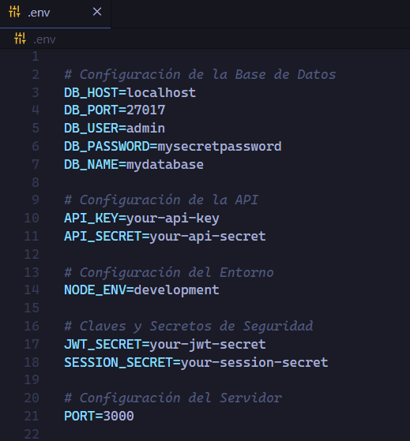
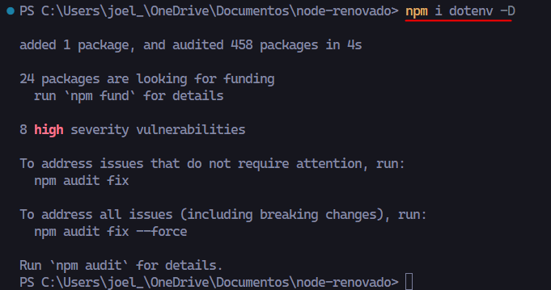
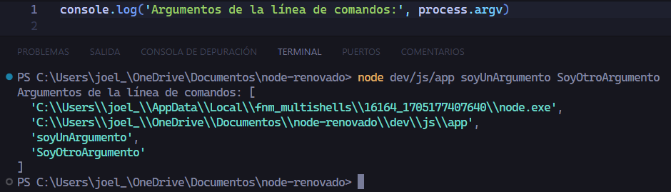
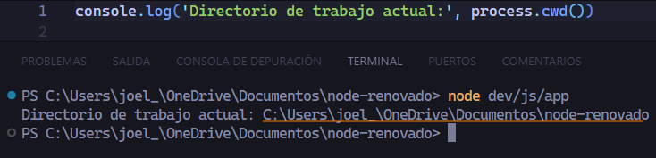

En esta sección hablaremos sobre la diferencia que hay entre el objeto global(node.js) y window(browser).
Empezaremos por el objeto window en un navegador
Pero si ejecutamos un console.log(window) dentro de la consola de node podemos ver que el objeto window solo se puede ejecutar en un navegador.
Sin embargo si escribimos global en un navegador devolverá un error ya que no existe un objeto llamado global, pero si ejecutamos en un console.log(global) dentro de la consola de node, podemos ver que nos devuelve cierta información.
Si somos observadores nos abremos dado cuenta que hay cosas que comparten window y global como los timers, los cuales funcionan igual que de costumbre.
Hasta este punto puede que nos estemos preguntando como es posible ejecutar un console.log() dentro de node si se supone que console.log() pertenece a al objeto window del navegador y el objeto window no se puede ejecutar dentro de node.
¿Qué es globalThis?
Para responder a nuestra duda anterior, es importante conocer globalThis que es una variable global tanto para window y node en toda nuestra aplicación.
Veamos la siguiente imagen que ilustra como globalThis apunta en node hacia la variable global y en un navegador apunta hacia window.
Sabiendo esto, siempre que queramos hacer referencia a la variable global tanto en node como en un navegador, es buena práctica utilizar globalThis.
Para corroborar los punteros de globalThis ejecutaremos globalThis en cada entorno tanto en node como en el navegador.
Gracias a globalThis es que podemos utilizar un console.log() dentro de node ya que todo lo que es global en realidad viene de globalThis por ejemplo.
Fetch
Promise
Math
Cualquier cosa que sea global.
Otra diferencia es que en node se suele utilizar mucho para el sistema de archivos, o para ver información de la ejecución de un proceso, como el numero de hilos del procesador, el consumo de memoria, la versión de node en la que se está ejecutando el proceso, y para ello tenemos el objeto global process.
global.process o process
El objeto process es un objeto global que proporciona información y control sobre el proceso actual de Node.js.
Algunas de las propiedades y métodos más utilizados del objeto process incluyen:
process.exit(?code): Se utiliza para terminar el proceso de Node.js de manera explícita. Puede recibir un código de salida como argumento, indicando si el proceso se cerró correctamente (código 0) o si hubo algún error (código diferente de 0).
process.env: Contiene las variables de entorno del sistema. Puedes acceder a variables específicas utilizando process.env.NOMBRE_VARIABLE.
console.log(process.env.NODE_ENV) // Accede a la variable de entorno NODE_ENV
process.argv: Un array que contiene los argumentos de la línea de comandos que se utilizaron para ejecutar el proceso Node.js.
console.log(process.argv)
process.cwd(): Devuelve el directorio de trabajo actual del proceso.
console.log(process.cwd())
process.pid: Devuelve el ID del proceso actual.
console.log(process.pid)
process.on(): Permite registrar manejadores de eventos para diferentes eventos del proceso, como 'exit', 'uncaughtException', entre otros.
process.on('exit', (code) => {
console.log(`Proceso finalizado con código ${code}`)
})
Si ejecutamos en un console.log(process) en node, nos devolverá una cantidad enorme de información, en la siguiente imagen solo mostraremos una parte ya que abarcariamos mucho sitio en la página para mostrar toda la información.
process.exit(?code)
Como se menciono anteriormente process.exit(?code) termina el proceso de Node.js
Ahora veamos como función el argumento opcional.
En que situaciones podemos ocupar process.exit(?code)?
Por ejemplo cuando ya tenemos un servidor más completo, queremos a lo mejor desconectar ciertas cosas antes de que ocurran y luego matar el proceso y lo que hacemos es escuchar ciertos eventos y terminar el proceso con process.exit().
process.env
Uno de los usos mas fuertes en process es la propiedad env, que nos permite acceder a las variables de entorno del sistema o tambien podemos acceder a variables específicas de nuestro proyecto utilizando process.env.NOMBRE_VARIABLE.Estas variables se definen fuera del código de nuestra aplicación y se cargan en el entorno de ejecución antes de que la aplicación comience a ejecutarse.
¿Qué es una variable de entorno? no es más que una valor dinámico que puede afectar el funcionamiento de la aplicación.
¿Estos valores dinámicos para que suelen ser usados? Para configurar parámetros específicos del entorno en el que se ejecuta la aplicación, como configuraciones de base de datos, claves de API, secretos, rutas de archivos, etc.
Podemos decir que las variables de entorno son utilizadas para la siguientes categorías.
Información sensible: passwords
Configuraciónes específicas para nuestro entorno de desarrollo: tokens, conexiones o puertos. Podemos tener diferentes configuraciones para diferentes entornos (por ejemplo, desarrollo, producción, prueba) y cambiar la configuración de la aplicación según la variable de entorno NODE_ENV.
Configuración para simular las variables de entorno que eventualmente vamos a tener cuando publicamos nuestro sitio web en servicios que ya incluyen variables de entorno o que nos permiten utilizar variables de entorno para manejar configuraciones ya sean puertos, conexiones a bases de datos de forma externa a nuestro código.
Es muy importante que el archivo donde guardemos nuestras variables de entorno nunca se suban a un respositorio en la nube ya que contienen información sensible. Así que nuestro .gitignore debemos incluir el archivo .env
Existe el paquete dotenv en Node.js, donde podemos almacenar nuestras variables de entorno en un archivo .env y cargarlas en nuestra aplicación usando: require('node: dotenv').config(). Antes de la versión de node 20.6 era necesario utilizar el paquete de dotenv para poder acceder a las variables de entorno desde cualquier otro archivo como en app.js o index.js
A partir de la versión 20.6 de Node.js, ya no es necesario utilizar el paquete de dotenv para poder acceder a las variables de entorno desde otro archivo.
Aparte de las variables de entorno de nuestro proyecto process.env también nos da acceso a las variables de entorno definidas por nuestro sistema operativo, ya sea windows o linux.
Ejemplo: Acceder a las variables de entorno de nuestro sistema operativo.
Ejemplo: Acceder a las variables de entorno de nuestra applicación web.
Lo primero es crear un archivo en la raiz de nuestro proyecto .env, en el cual guardaremos nuestras variables de entorno de configuración.
Antes de continuar, es necesario saber que en un archivo .env los comentarios se ponen con un #. Sin embargo, no todos los sistemas o bibliotecas de manejo de variables de entorno admiten comentarios en archivos .env. El estándar oficial de archivos .env no incluye soporte para comentarios, pero muchas implementaciones y herramientas, como dotenv, los admiten.
La sintáxis para declarar las variables de entorno es la siguiente:
Por convención se suele utilizar las nomenclaturas PASCAL_CASE o UPPER_SNAKE_CASE, nosotros utilizaremos Upper Snake Case
Y muy importante no puede existir espacios desde que se declarala variable hasta que se inicializa.
NOMBRE_VARIABLE=valor-de-variable → Como podemos ver no existe ningun espacio desde la declaración hasta la inicialización de la variable.

Para acceder a nuestras variables de entorno desde cualquier otro archivo utilizamos process.env.NOMBRE_VARIABLE, pero como ya vimos anteriormente es necesario instalar el paquete de dotenv para poder acceder a ellas.
Veamos un ejemplo si quieremos acceder a una variable de entorno sin haber instalado el paquete de dotenv.
En la mayoría de los casos, es común instalar dotenv como una dependencia de desarrollo (devDependency). Esto se debe a que dotenv generalmente se utiliza solo durante el desarrollo para cargar variables de entorno desde un archivo .env. En producción, es posible que las variables de entorno se configuren de manera diferente, por ejemplo, directamente en el servidor de alojamiento.
Para instalar una dependencia de desarrollo tenemos los siguiente comandos.
npm i nombreDependencia --save-dev
npm install nombreDependencia --save-dev
npm i nombreDependencia -D
npm install nombreDependencia -D
Ya que sabemos como instalar una dependencia de desarrollo instalremos dotenv como dependecia de desarrollo.
npm i dotenv -D

Para poder utilizar dotenv hay que asegurarnos de tener la siguiente línea de código require('dotenv').config() antes de cualquier intento de acceder a las variables de entorno.
Pero como nosotros estamos utilizando el sistema de módulos de ecma ESM, en lugar de utilizar require utilizaremos import dotenv from 'dotenv' y antes de querer acceder a una variable de entorno necesitamos la línea de dotenv.config()
Esto era la forma tradicional de poder acceder a variables de entorno con dotenv pero a partir de la versión 20.6 de node, ya no es necesario utilizar un modulo externo como dotenv, si no que ya es compatible de forma nativa. Veamos como hacerlo.
Necesitamos agregar al ejecutar node en nuestra consola el siguiente comando
node --env-file .env rutaDeNuestroJS
Entonces nuestro comando quedaría de la siguiente manera
node --env-file .env dev/js/app Como podemos observar obtenemos el resultado de la variable de entorno sin necesidad de usar dotenv.
process.argv
Es un array que contiene los argumentos de la línea de comandos que se utilizaron para ejecutar el script de Node.js. Los dos primeros elementos del arreglo son rutas del ejecutable de Node y del script que se está ejecutando, mientras que los elementos restantes son los argumentos pasados al script.
Veamos un ejemplo

El primer elemento siempre pertenece al binario de node, es decir todo el path donde se encuentra el ejecutable de node.exe
El segundo elemento es el path a la ruta del script que estamos ejecutando
El resto de los elementos son los argumentos pasados al script
La siguiente imagen nos ayudará a visualizar mejor el resultado.
process.cwd Directorio de trabajo actual
Devuelve el directorio de trabajo actual del proceso Node.js. Es el directorio desde el cual se ejecutó el script.

Esto ¿porque es importante? R= Porque hay veces que ejecutamos un script desde una dirección diferente.
Veamos el siguiente ejemplo.
Nos moveremos a una dirección diferente
Si ejecutamos desde esta nueva dirección nuestro script, veremos que nos devuelve un directorio diferente
process.cwd devuelve la ruta desde donde se está ejectando el archivo, ya que muchos se confunden y piensan que devuelve la ruta del archivo.